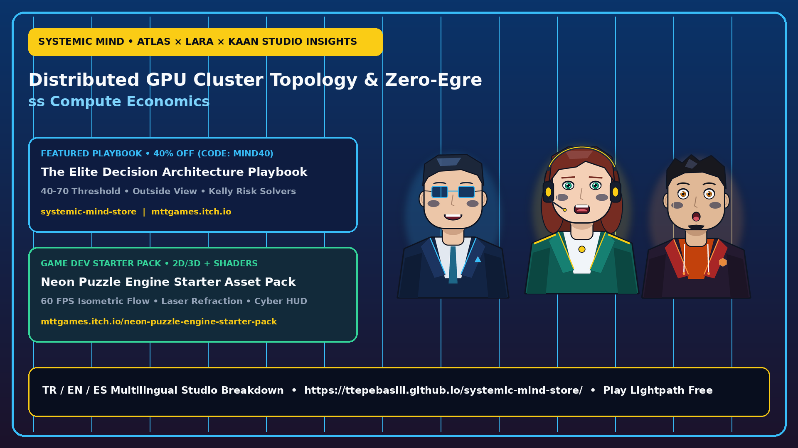

Distributed GPU Cluster Topology & Zero-Egress Compute Economics — Análisis de Arquitectura con Atlas, Lara y Kaan

En este episodio de estudio, Atlas (Arquitecto Principal), Lara (Investigadora Curiosa) y Kaan (Especialista en Casos Límite) analizan a fondo Distributed GPU Cluster Topology & Zero-Egress Compute Economics.
1. Cómo Eliminar Cuellos de Botella Invisibles en Memoria
Los promedios ocultan los picos del percentil noventa y nueve. Utilizar grupos de memoria preasignados y topologías deterministas garantiza sesenta cuadros por segundo estables y reduce drásticamente el gasto innecesario en la nube.
Studio Dialogue Highlights
- Atlas: Your projects miss deadlines because you're paying a 'locality tax' to centralized clouds. Moving petabytes to train a model isn't just slow; it's a structural failure in your compute topology.
- Lara: Wait, so you're saying the bottleneck isn't the GPU compute power itself, but the massive, silent 'moving cost' we pay every time we sync data across regions?
- Kaan: Exactly, Lara. It’s like trying to bake a cake while your oven is in the next state. You spend more on fuel getting the flour there than on the actual baking.
- Atlas: Exactly. To achieve zero-egress, you must invert the architecture. Bring the compute nodes to the data, rather than hauling your datasets into a proprietary, high-walled cloud garden.
- Kaan: Sounds fancy, Atlas. But 'bringing compute to data' usually means I’m managing a distributed nightmare of unstable nodes instead of a clean, click-to-deploy cloud interface.
- Lara: Kaan’s right, if we go distributed, doesn't the overhead of orchestration eat up all the money we saved by skipping the egress fees? Where's the balance?
2. Recursos Oficiales y Paquetes de Producción
Aplica estos marcos cuantitativos y motores 2D/3D listos para producción a través de nuestros paquetes verificados: